2019年北京市中考数学试题 · 数学解答题 第23题 · 对应解析
23．小云想用7天的时间背诵若干首诗词，背诵计划如下：
①将诗词分成4组，第i组有
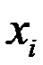
首，i =1，2，3，4；②对于第i组诗词，第i天背诵第一遍，第（
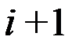
）天背诵第二遍，第（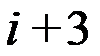
）天背诵第三遍，三遍后完成背诵，其它天无需背诵，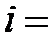
1，2，3，4；第1天 | 第2天 | 第3天 | 第4天 | 第5天 | 第6天 | 第7天 | |
第1组 | 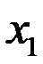 | ||||||
第2组 | 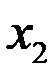 | ||||||
第3组 | |||||||
第4组 | 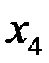 |
③每天最多背诵14首，最少背诵4首．
解答下列问题：
（1）填入
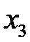
补全上表；（2）若
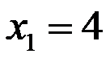
，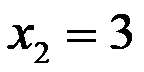
，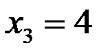
，则的所有可能取值为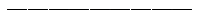
；（3）7天后，小云背诵的诗词最多为 首．
首．
【解析】（1）如下图
第1天 | 第2天 | 第3天 | 第4天 | 第5天 | 第6天 | 第7天 | |
第1组 | |||||||
第2组 | |||||||
第3组 | 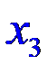 | ||||||
第4组 |
（2）根据上表可列不等式组：
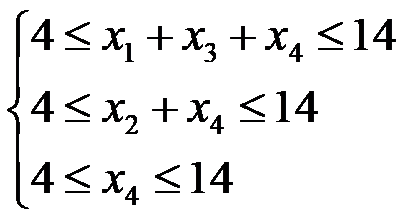
，可得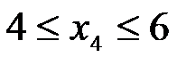
（3）确定第4天，
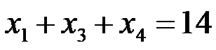
，由第2天，第3天，第5天可得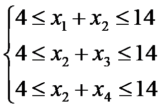
，∴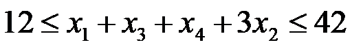
，∴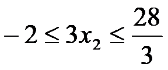
，可取
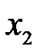
最大整数值为9，∴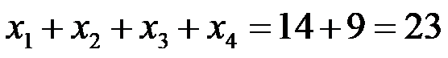